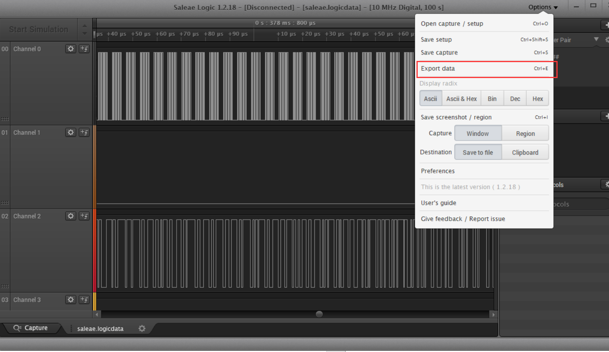
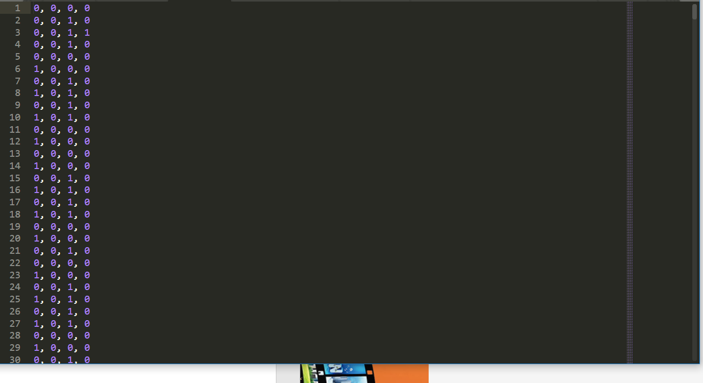
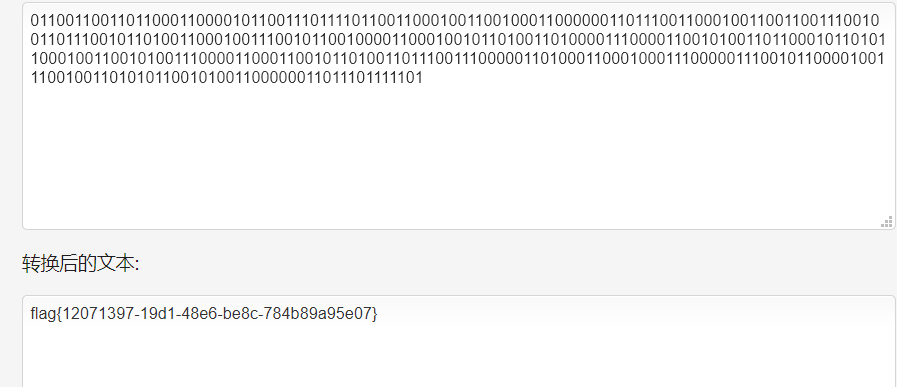
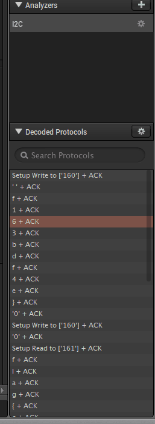
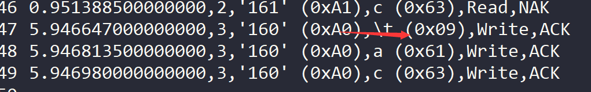

比赛过去已经比较久了,拖延症一直懒得写wp.
去年也参加过ciscn,基本上只解了个签到题就进了线下(丢人)
今年稍微好一点,但是参数队伍明显多了,还好线下赛也扩容了.
确确实实,真真切切的意识到自己和大佬们的差距,不仅仅是比赛经验带来了,还有思维方式以及学习能力的差距.
MISC
0x00 签到题
打开软件自己就给flag了.
三个圆圈也行?
flag{87e37d95-6a48-4463-aff8-b0dbd27d3b7d}
0x01 saleae
拿到附件,看到.logicdata后缀,随便google一下
找到一个叫saleae工具,这不就是题目名称么…
完全没接触过数电方面的东西.下载安装好用saleae打开.logicdata文件

搜了一下saleae的基本操作,导出csv格式的文件.

第一列01交替,第三列0和1随机,写了个脚本取将第三列的数据直接转ascii.
不太对,但是得到flag{这个字符串了,后面是乱码.
继续翻google,看各种文档.大概知道了这个叫串行同步传输协议.
https://www.jianshu.com/p/b0c5810a79ef
8位bit一组,当电位改变时传输一位bit.
稍微改下脚本,得到:
01100110011011000110000101100111011110110011000100110010001 10000001101110011000100110011001110010011011100101101001100 01001110010110010000110001001011010011010000111000011001010 01001110010110010000110001001011010011010000111000011001010011011000101101011000100110010100111000011000110010110100110110110001011010110001001100101001110000110001100101101001101110011100000110100011100111000001101000110001000111000001110010110000100111000110001000111000001110010110000100111001001101010110010100110000001101110111110100110101011001010011000000110111011111011
转ascii码

flag{12071397-19d1-48e6-be8c-784b89a95e07}
0x02 24c
第二天的比赛还有进阶的题目.
对数电一无所知,直接把题目复制到google,就看到L2C关键字,又看到saleae里面见过.
所以用saleae打开附件,选择L2C协议解析.

一眼就看到flag(对flag总是特别敏感)
导出为csv.把flag拼接一下

(完整的截图找不到了..)
f163bdf4e}flag{c46d9e10-e9b5-4d90-a883-41c\ac
明显不对,google翻L2C协议
https://zhuanlan.zhihu.com/p/31086959
大致意思就是读flag的一个过程,中间有几次write操作.
write操作传输的第一个Byte表示写入位置.
改好flag即可.
flag{c46dac10-e9b5-4d90-a883-41cf163bdf4e}
0x03 usbasp
文件格式还一样的.google也没搜到有用的结果.反正saleae里面就这么几个协议,一个一个事.
很快就试到有意义的字符串.
翻到最后找到flag
flag{85b084c6-42e6-495c-87b4-46dfb1df58a0}
CRYPTO
0x04 justsoso
各种计算器+现实找人+百度解的.
flag{01924dd7-1e14-48d0-9d80fa6bed9c7a00}0
0x05 warmup
总感觉这种题做过好几次了,和去年的DDCTF里的一题基本一样.
可以控制填充字符串的长度,直接一位一位爆破出来.
(脚本稍后附上)
WEB
0x06 JustSoso
伪协议读源码,根据Hint先读hint.php的
/?file=php://filter/read=convert.base64-encode/resource=hint.php
1 |
|
顺便读一下index.php的
1 | <html> |
很明显的PHP反序列化的题目,审源码尝试构造反序列化字符串.
逻辑比较清晰,构造一个反序列化字符串,使得在__destruct时调用Flag类中getflag函数,期间要绕过各种判断.
那么一个一个找办法绕.
第一个就是
__weakup时会把变量置为null,以php 反序列化 __weakup为关键字搜索,很快就找到不少文章.php反序列化绕过 __weakup](https://mochazz.github.io/2018/12/30/PHP反序列化bug/)
这个 bug 的原理是：当反序列化字符串中，表示属性个数的值大于真实属性个数时，会跳过 __wakeup 函数的执行。
$handle是私有变量,以php 反序列化 私有变量为关键字搜索.
在DemoPoc 中，mntn data 占了10个长度，是因为序列化时：对象私有化成员会自动添加了类名，以区分他们是Private 变量；如果是Protected 变量则会添加* 号。并且前缀添加空字节
flag关键字不能出现, 以php parse_url 漏洞为关键字搜索
加几个斜杠,成功绕过.
绕过md5比较.这里有两种方法,一种是直接碰撞,另外一种就是
引用,使token变为token_flag的引用.最终payload:
///index.php?file=hint.php&payload=O:6:"Handle":2:{s:14:"%00Handl e%00handle";O:4:"Flag":3:{s:4:"file";s:8:"flag.php";s:5:"token";s:32:"c4ca 4238a0b923820dcc509a6f75849b";s:10:"token_flag";R:4;}}
flag{570a8aea-e399-4e02-be6f-9496a70d6cb7}
0x07 全宇宙最简单的SQL
确实很简单,但是比赛的时候没做出来,深深的认识到了自己的不足.
看到wp的时候,环境已经关了,也没有截图了.
先拿常用的sql关键字的字典爆破一下,看看哪些东西被过滤了.
顺便手测了一下,基本确定是个盲注.当最终拼接语句无错误时无论结果如何均为 登录失败.
当最终语句有错时返回为 数据库操作失败.
在网上看到两种解法.
接下来就是mysql蜜罐读文件了,刚前两天的DDCTF2019就出来过,又来了,但是我根本就没做到这里(捂脸)
https://github.com/allyshka/Rogue-MySql-Server
github上有个工具.
0x08 love_math
这题我也没做出来,也是卡在中间某一步,痛苦~
右键源代码可以看到一个可用函数的白名单,基本都是math库里的.
1 |
|
https://www.php.net/manual/zh/ref.math.php
目标就是构造一个80字符以下的payload读到flag
1 | # system('ls') |
问题来了,只能转换出字母和数字,特殊符号没办法.(我就卡在这里)
实际上绕道而行,通过其他params引入即可.比如url后面跟个变量,还有ROIS大佬的system(getallheaders(){9}),通过header引入.
最最最优雅的解法来自我在群内看到的某个群友,忘记名字了,只保存了payload:
base_convert(47138,20,36)(base_convert(3761671484,13,36)(dechex(474260465194)))
79个字符,exec(hex2bin(6e6c20662a))
6e6c20662a内容是nl f*
太秀了,允许我膜一下!!!
最后一题web没看懂,了解了大致思路,想复现环境没了.找机会再补上